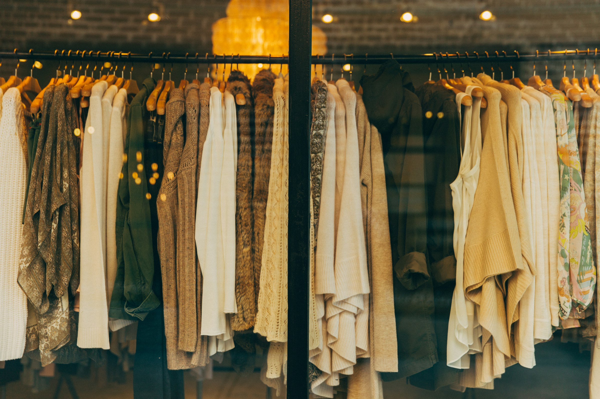
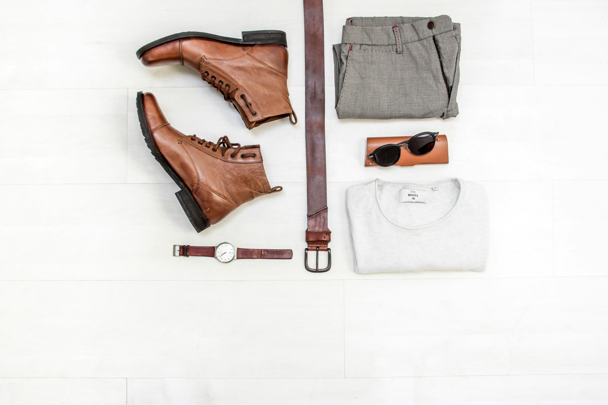

A small studio, on purpose
Twelve people, two workshops, and a stubborn belief that a wardrobe should get better with age.
We got tired of replacing things
Sayso Style began in a back room with one pattern, one fabric roll, and a question we could not shake: what would clothing look like if it were designed to be kept rather than replaced? Everything since has been an answer to that.

Two rooms, named on the label
Our knitwear is made outside Porto by a family workshop we have used since the first season. Our tailoring is cut in east London, ten minutes from the studio. We visit both every season, and every product page tells you which one made the piece.

Fewer fabrics, better ones
We work with a short list of mills and buy deadstock wherever the quantity allows. It limits what we can make, which is the point — scarcity keeps the runs small and the standard high.
- Certified organic cotton and linen
- Traceable merino from mulesing-free flocks
- Deadstock wool, rescued by the roll
- No virgin polyester, ever
Where it happens
 Cutting room
Cutting room



Follow the making
Studio notes, new work and restocks, roughly once a month.